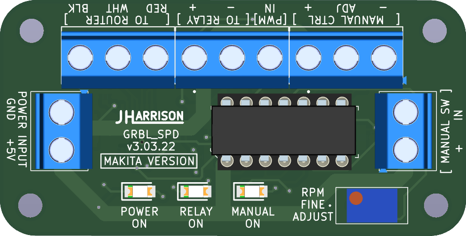
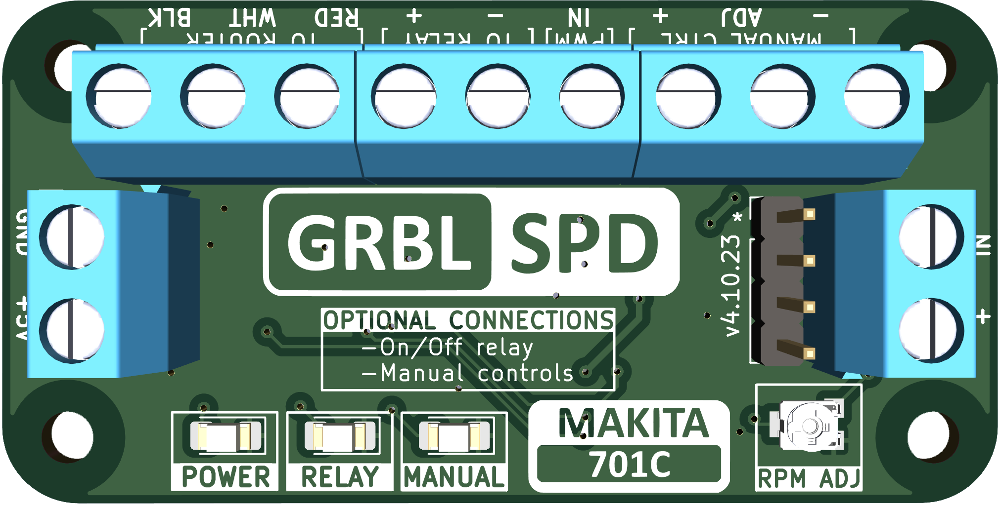

Developed to integrate software control of the Makita 701C for use with but not limited to the Arduino Uno board (Flashed with GRBL 1.1)
ABOUT THE GRBL_SPD
This project allows for automatic control of a standard Makita 701C router for CNC machines. GRBL_SPD lets you set the rpm for your bits in software such as Vectric and have it automatically set your router. This cicuit replaces the potentiometer in the router and has an accuracy of approximately between +/- 100 to 200 RPM. In most cases this deviation has no impact on the machining process. You no longer have to turn on the router before sending the file, GRBL_SPD will do it for you. There are inputs for manual control which overrides the RPM setting in the GRBL file being sent.
VERSIONS
Version 3 -- Discontinued
Reason: ATtiny84 microcontroller reached end of life.

Version 4 -- Available
Upgraded to ATtiny1624 microcontroller

Version 4 Features:
- 20MHz ATtiny1624 microcontroller
- 10,000 to 30,000 RPM
- On/Off relay control
- Auto off when using manual override
- External manual controls
Prerequisites:
- +5v power and ground from CNC controller
- 0-5v PWM signal from CNC controller
- 1kHz PWM signal
- Sheilded cable between router and GRBL_SPD
Optional:
- Connect relay for on/off function
- Potentiometer and switch for manual controls
Videos:
Some users have tested with 240v Makita versions and have it functioning. I am not able to confirm this other than some video and testimony from those users. This board is designed for the Makita 701C so any other models will be experimenting at your own risk.
Links to videos from Derek using the Makita 700C 240vac.
WARNING! Voltages above 5v connected to this board will damage the microcontroller. If experimenting with controllers other than the standard Uno be sure to double check voltages and/or add protection to inputs. Zener and resistor for example.
Possible high voltage setup:
(back to top)
Controller Settings
GRBL 1.1 config.h
#define VARIABLE_SPINDLE // Default enabled. Comment to disable.
#define SPINDLE_PWM_MIN_VALUE 2 // Default disabled. Uncomment to enable. Must be greater than zero. Integer (1-255).
GRBL settings
$30=30000
$31=10000
$32=0
Depending on your sending software and controller setup there may be a setting for PWM frequency which should be 1kHz. There may also be settings for PWM voltage 0-5v or 0-10v so make sure it's set for 0-5v. A few different senders also have their own settings for min and max RPM so they should match the grbl settings. If your software/controller has mapping than you may need to set PWM accordingly so that 0% is off, 1 or 2% is min and 100% is max.
Connections
- Power Input --> [+5v] and [GND] from controller 5v and ground
- PWM --> [PWM] 0-5v PWM from controller
- Router --> [RED] / [WHT] / [BLK] from router
- Relay --> [-] and [+] to relay coil
- Manual SW --> [IN] and [+] to switch
- Manual CTRL --> [-] / [ADJ] / [-] to potentiometer
(back to top)
Before You Begin
First thing to do is to check whether your controller is setup for the PWM signal. Make sure GRBL 1.1 is flashed to your controller.
1. If it is then with your machine turned on and using your favorite sender software, measure the voltage on the PWM (Arduino pin 11) while you adjust the RPM in the software. It should read voltages between 0v and 5v and change up and down with the software. If it does than you’re good to go.
2. If it doesn’t than you will need to re-flash your controller. There are many resources on how to do this on the web.
Flashing GRBL
1. Make note of all your machine settings on your controller.
2. Download GRBL 1.1 latest version.
3. Uncomment enable variable spindle in config.h.
4. Flash to your controller.
5. If machine settings are gone enter them from notes.
Items Not Provided
1. Wire long enough to run from the GRBL_SPD to the router (5 wires) and from the GRBL_SPD to the optional manual controls (5 wires). In the range of 22 gauge as all these connections are low voltage and low current. Shielded cables are recommended to protection from interference.
2. Standoffs or other method to mount GRBL_SPD inside control case. Old computer motherboard standoffs, PCB adhesive standoffs (Amazon) or however you see fit.
3. Soldering iron or connectors to make the connections inside the router and to the optional switch with potentiometer.
4. Electrical tape or heat shrink.
5. Small zip ties if necessary to keep things tidy.
The Router
Start by removing the router and remove the four screws holding the cap. Once open, run the wiring through the cover before making any connections. Now locate the red/white/black wires from the speed dial. Cut these wires and remove the Makita dial making sure there is enough wire left to make the connections. Connect the Makita red/white/black to GRBL_SPD red/white/black (refer to connection diagram). Locate the white wire from the Makita switch if you are connecting the internal optional relay. Cut the white wire leaving enough length to make connections to both ends. Connect high voltage wires from relay to both ends of the cut white wire (refer to connection diagram). Connect low voltage wires to remaining connections on the relay(refer to connection diagram). The relay can be placed in the cavity on the opposite side of the main power connector or where the speed dial used to be. Screw the top of the router back on making sure not to pinch any wires and mount router back onto CNC.
(back to top)
Optional Manual Control
If you have downloaded and printed the stl file provided here then start by running the wires through the printed hole at the back. If your wires are going to go downward from the enclosure then start by connecting the wiring to the potentiometer (refer to connection diagram). Mount the potentiometer and the switch into the 3D printed enclosure. Connect the remaining two wires to the switch.
This enclosure is made to snap onto the Millright Mega V leg. If you're not using this enclosure then do as you need and make the same connections as per your mount.
The Mount:
The STL files for this mount and the filler piece are located in the stl folder.
GRBL_SPD Connections:
Run the wire from the router to the control box through the drag chains if equipped. Run the wires from the manual controls if installed. Make the router and manual control connections to the GRBL_SPD board (refer to connection diagram). Connect the PWM wire to the GRBL controller. Connect the 5v power and ground to the GRBL controller. Take a moment to check all connections.
CHECKS:
1. Turn on you CNC with the computer connected and the sender software running. Check that the POWER ON led is on.
2. Turn the manual control switch on if you have it. The spindle should be running at what the dial is indicating. Check that the RELAY ON led and the MANUAL ON led are on. Turn the knob from left (10000 rpm) to right (30000 rpm). If the RPM is reacting opposite to the dial then the potentiometer wires have been connected incorrectly. Reverse the (+) and (-) wires at the GRBL_SPD board.
3. In your sender software be sure to set $30 to 30000 and $31 to 10000. Also make sure if there is a configuration section in the software, be sure to check that the min and max rpm are set the same. You may need to restart the software after changes are made.
4. With manual turned off, start the spindle with the software. Adjust to different RPM to ensure it’s functioning. If it’s not then check your connections and/or ensure that the variable spindle option is enabled in GRBL with a voltmeter.
5. If all is well and you have the manual controls, turn the spindle on with the software set at 15000 rpm. Set the manual dial to 30000 rpm and turn on the switch. Rpm should not have changed. Slowly turn the dial down towards 15000 rpm and when it is close, the manual control will take over. If the switch is turned off it will revert back to the software setting. If you’re in the middle of a path and want to override the software speed, leave the switch on until complete. The router will turn off when the path is complete.
6. Test your M3, M5, S##### commands.
Now you can set your speeds for each bit in your cad software of choice and your router will automatically be set to your required speed. When your path is finished the router will turn off when complete.
NOTES:
The GRBL_SPD board you receive has been tested and calibrated with a Makita 701C router. There could be slight differences in routers but the variance in RPM shouldn’t be too drastic. If you have a handheld tachometer then you can test and adjust the RPM with the trimmer resister if necessary. In your sender software of choice turn on the router and set it for 20000 rpm. Take a reading with the tachometer and adjust the trimmer until it’s as close to 20000 as possible.
That’s it, congratulations you’re done!
Any questions drop me an email at jharrison116@hotmail.com or message me through the social links at the top of this page.
(back to top)


{kind=link}
{kind=link}
{kind=link}
{kind=link}
{kind=link}
{kind=link}
{kind=link}
{kind=link}
{kind=link}